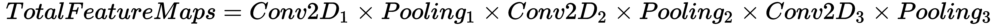
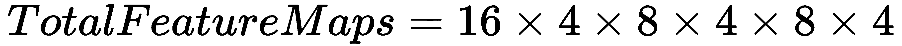

人类大脑通常是我们在构建人工智能时的主要灵感和对比，也是深度学习研究人员经常寻求灵感或保证的东西。通过更详细地研究大脑及其各个部分，我们经常会发现神经子过程。神经子过程的一个例子是我们的视觉皮层，即我们大脑中负责视觉的区域。我们现在知道，我们大脑的这个区域有不同的连接方式，对输入的反应也不同。这恰好类似于我们在以前使用神经网络对图像进行分类的尝试中发现的模拟。现在，人类大脑有许多子过程，都有大脑中特定的映射区域(视觉、听觉、嗅觉、言语、味觉、触觉和记忆/时间)，但在这一章中，我们将看看我们如何通过使用称为卷积和递归网络的高级形式的深度学习来建模视觉和记忆。视觉和记忆的两个核心子过程被我们广泛用于许多任务，包括游戏，并成为许多深度学习者的研究焦点。
研究人员经常从大脑中寻找灵感，但他们建立的计算机模型往往不完全类似于他们的生物模型。然而，研究人员已经开始识别我们大脑内部神经网络的几乎完美的类似物。这方面的一个例子是ReLU激活函数。最近发现，当绘制时，我们大脑神经元的兴奋水平与ReLU图完全匹配。
在这一章中，我们将详细探讨卷积神经网络和递归神经网络。我们将看看他们如何解决在深度学习中复制精确视觉和记忆的问题。这两种新的网络或层类型是相当新的发现，但在一定程度上促成了深度学习的许多进步。本章将涵盖以下主题:
在继续之前，请确保您对前一章中概述的基础知识有相当好的理解。这包括运行安装本章所需依赖项的代码示例。
视觉无疑是最常用的子过程。你现在正在使用它！当然，这是研究人员早期试图用神经网络模拟的东西，只是在卷积的概念被应用并用于图像分类之前，没有什么东西真正工作得很好。卷积的概念是检测(有时是分组)和隔离图像中的共同特征的思想。例如，如果你把一个熟悉的物体的照片的3/4遮盖起来给某人看，他们几乎肯定会通过只识别部分特征来识别图像。卷积以同样的方式工作，放大一幅图像，然后分离出特征供以后识别。
卷积的工作原理是将图像分解成其特征部分，这使得训练网络更加容易。让我们跳到一个代码示例，它从我们上一章停止的地方扩展，但现在引入了卷积。打开Chapter_2_1.py列表，按照以下步骤操作:
import tensorflow as tf
from tensorflow.keras.layers import Input, Dense, Conv2D, MaxPooling2D, UpSampling2D
from tensorflow.keras.models import Model
from tensorflow.keras import backend as K
input_img = Input(shape=(28, 28, 1)) # adapt this if using `channels_first` image data format
x = Conv2D(16, (3, 3), activation='relu', padding='same')(input_img)
x = MaxPooling2D((2, 2), padding='same')(x)
x = Conv2D(8, (3, 3), activation='relu', padding='same')(x)
x = MaxPooling2D((2, 2), padding='same')(x)
x = Conv2D(8, (3, 3), activation='relu', padding='same')(x)
encoded = MaxPooling2D((2, 2), padding='same')(x)
x = Conv2D(8, (3, 3), activation='relu', padding='same')(encoded)
x = UpSampling2D((2, 2))(x)
x = Conv2D(8, (3, 3), activation='relu', padding='same')(x)
x = UpSampling2D((2, 2))(x)
x = Conv2D(16, (3, 3), activation='relu')(x)
x = UpSampling2D((2, 2))(x)
decoded = Conv2D(1, (3, 3), activation='sigmoid', padding='same')(x)
第二个要注意的是使用了Conv2D层或二维卷积层以及后面的MaxPooling2D或UpSampling2D层。汇集或采样图层用于收集或相反地揭示要素。请注意，当对图像进行编码时，我们如何在卷积后使用池化或下采样层，然后在对图像进行解码时使用上采样层。
autoencoder = Model(input_img, decoded)
autoencoder.compile(optimizer='adadelta', loss='binary_crossentropy')
from tensorflow.keras.datasets import mnist
import numpy as np
(x_train, _), (x_test, _) = mnist.load_data()
x_train = x_train.astype('float32') / 255.
x_test = x_test.astype('float32') / 255.
x_train = np.reshape(x_train, (len(x_train), 28, 28, 1))
x_test = np.reshape(x_test, (len(x_test), 28, 28, 1))
from tensorflow.keras.callbacks import TensorBoard
autoencoder.fit(x_train, x_train,
epochs=50,
batch_size=128,
shuffle=True,
validation_data=(x_test, x_test),
callbacks=[TensorBoard(log_dir='/tmp/autoencoder')])
decoded_imgs = autoencoder.predict(x_test)
n = 10
plt.figure(figsize=(20, 4))
for i in range(n):
ax = plt.subplot(2, n, i)
plt.imshow(x_test[i].reshape(28, 28))
plt.gray()
ax.get_xaxis().set_visible(False)
ax.get_yaxis().set_visible(False)
ax = plt.subplot(2, n, i + n)
plt.imshow(decoded_imgs[i].reshape(28, 28))
plt.gray()
ax.get_xaxis().set_visible(False)
ax.get_yaxis().set_visible(False)
plt.show()
训练我们的简单样本现在需要大量的时间，这在较旧的硬件上可能非常明显。在下一节中，我们将详细讨论如何开始监控培训课程。
TensorBoard本质上是一个数学图形或计算引擎，在处理数字方面表现非常好，因此我们在深度学习中使用它。该工具本身还很不成熟，但有一些非常有用的功能来监控训练练习。
按照以下步骤开始对我们的样本进行监控培训:
//first change directory to sample working folder
tensorboard --logdir=/tmp/autoencoder
TensorBoard 1.10.0 at http://DESKTOP-V2J9HRG:6006 (Press CTRL+C to quit)
or use
http://0.0.0.0:6000
你立即想到的可能是，“我们所经历的增加的训练时间值得吗？“毕竟，解码后的图像看起来与前面的例子非常相似，而且训练速度更快，只是，请记住，我们正在通过在每次迭代中调整每个权重来缓慢训练网络权重，然后我们可以将其保存为模型。这个模型或大脑可以在不经过训练的情况下再次执行同样的任务。工程够恐怖！在我们学习本章的时候，请记住这个概念。在 第三章， GAN for Games 中，我们将开始保存和移动我们的大脑模型。
在下一节中，我们将更深入地了解卷积的工作原理。当你第一次遇到卷积时，它可能很难理解，所以不要着急。理解它的工作原理很重要，因为我们将在后面广泛使用它。
卷积是一种从图像中提取特征的方法，可以让我们更容易地根据已知特征对其进行分类。在我们进入卷积之前，让我们先退后一步，理解为什么网络，以及我们对这个问题的看法，需要隔离图像中的特征。看看下面的内容；这是一个名为Sadie的狗的样本图像，应用了各种图像过滤器:
前面显示了未应用滤镜、边缘检测、像素化和发光边缘滤镜的四个不同版本。然而，在所有情况下，不管应用了什么样的滤波器，作为人类的你都可以清楚地识别出这是一张狗的图片，除了注意在边缘检测的情况下，我们已经消除了识别狗所不必要的额外图像数据。通过使用过滤器，我们可以提取我们的神经网络识别狗所需的特征。这就是卷积滤波器的全部功能，在某些情况下，其中一个滤波器可能只是简单的边缘检测。
卷积过滤器是定义单个数学运算的矩阵或数字核心。该过程从乘以左上角像素值开始，将矩阵运算的结果相加并设置为输出。内核以称为步幅的步长在图像上滑动，该操作如下所示:
应用卷积过滤器
在上图中，使用的步幅为1。卷积运算中应用的滤波器本质上是边缘检测滤波器。如果您查看最终操作的结果，您可以看到中间部分现在填充了OS，这大大简化了任何分类任务。我们的网络需要学习的信息越少，它们学习的速度就越快，数据也就越少。有趣的是，卷积学习滤波器、数字或权重，以便提取相关特征。这个不太明显，可能会比较混乱，我们再来过一遍。回到我们之前的例子，看看我们如何定义第一个卷积层:
x = Conv2D(16, (3, 3), activation='relu', padding='same')(input_img)
在这一行代码中，我们将第一个卷积层定义为具有16个输出滤波器，这意味着该层的输出实际上是16个滤波器。然后我们将内核大小设置为(3,3)，它代表一个3x3矩阵，就像我们的例子一样。请注意，我们没有指定各种内核过滤器权重的值，因为这毕竟是网络正在训练要做的事情。
让我们看看当所有的东西都放在下图中时是什么样子:
卷积第一步的输出是特征图。一个特征图表示应用的单个卷积滤波器，并且通过应用学习的滤波器/内核来生成。在我们的例子中，第一层产生 16个内核，这些内核又产生 16个特征图；请记住，16的值是滤波器的数量。
卷积之后，我们应用池化或子采样，以便将特征收集或聚集到集合中。这种二次采样进一步创建了新的集中特征图，突出了我们正在训练的图像的重要特征。让我们回顾一下在前面的例子中我们是如何定义第一个池层的:
在代码中，我们使用(2,2)的pool_size进行子采样。大小表示通过宽度和高度对图像进行下采样的因子。因此，一个2 x 2大小的池将创建四个宽度和高度各为一半的要素地图。在我们的第一层卷积和合并之后，这导致总共64个特征地图。我们通过将16(卷积特征图)乘以4(汇集特征图)= 64个特征图来得到这个值。考虑在我们的简单示例中我们总共构建了多少个要素地图:

x = MaxPooling2D((2, 2), padding='same')(x)

也就是65，536张4 x 4图像的特征地图。这意味着我们现在在65，536个较小的图像上训练我们的网络；对于每一幅图像，我们试图进行编码或分类。这显然是训练时间增加的原因，但也要考虑我们现在用于分类图像的额外数据量。现在，我们的网络正在学习如何识别我们图像的部分或特征，就像我们人类识别物体一样。
That is 65,536 feature maps of 4 x 4 images. This means we now train our network on 65,536 smaller images; for each image, we attempt to encode or classify. This is obviously the cause for the increased training time, but also consider the amount of extra data we are now using to classify our images. Now our network is learning how to identify parts or features of our image, just as we humans identify objects.
例如，如果你刚刚看到一只狗的鼻子，你可能会认出那是一只狗。因此，我们的样本网络现在正在识别手写数字的部分，正如我们现在所知，这极大地提高了性能。
正如我们所看到的，卷积对于识别图像非常有效，但是汇集的过程可能会对保持空间关系产生破坏性的后果。因此，当涉及到需要某种形式的空间理解的游戏或学习时，我们倾向于限制合用或完全消除。由于理解何时使用和不使用池很重要，我们将在下一节中更详细地讨论这一点。
建设自动驾驶的CNN
Nvidia在2017年创建了一个名为 PilotNet 的多层CNN，它能够通过向车辆显示一系列图像或视频来驾驶车辆。这是神经网络力量的一个令人信服的证明，尤其是卷积的力量。下图显示了PilotNet的神经架构:
本例中训练的目标是输出方向盘应该转动的角度，以便保持车辆在道路上行驶。打开Chapter_2_2.py中的代码列表，并遵循以下步骤:
我们现在将切换到使用Keras的几个样本。虽然TensorFlow嵌入式版本的Keras为我们提供了很好的服务，但我们需要的一些功能只能在完整版本中找到。要安装Keras和其他依赖项，请打开一个shell或Anaconda窗口并运行以下命令:
在代码文件(Chapter_2_2.py)的开头，我们从一些导入开始，并使用以下代码加载样本数据:
pip install keras
pip install pickle
pip install matplotlib
import os
import urllib.request
import pickle
import matplotlib
import matplotlib.pyplot as plt
#downlaod driving data (450Mb)
data_url = 'https://s3.amazonaws.com/donkey_resources/indoor_lanes.pkl'
file_path, headers = urllib.request.urlretrieve(data_url)
print(file_path)
with open(file_path, 'rb') as f:
X, Y = pickle.load(f)
import numpy as np
def unison_shuffled_copies(X, Y):
assert len(X) == len(Y)
p = np.random.permutation(len(X))
return X[p], Y[p]
shuffled_X, shuffled_Y = unison_shuffled_copies(X,Y)
len(shuffled_X)
test_cutoff = int(len(X) * .8) # 80% of data used for training
val_cutoff = test_cutoff + int(len(X) * .2) # 20% of data used for validation and test data
train_X, train_Y = shuffled_X[:test_cutoff], shuffled_Y[:test_cutoff]
val_X, val_Y = shuffled_X[test_cutoff:val_cutoff], shuffled_Y[test_cutoff:val_cutoff]
test_X, test_Y = shuffled_X[val_cutoff:], shuffled_Y[val_cutoff:]
len(train_X) + len(val_X) + len(test_X)
X_flipped = np.array([np.fliplr(i) for i in train_X])
Y_flipped = np.array([-i for i in train_Y])
train_X = np.concatenate([train_X, X_flipped])
train_Y = np.concatenate([train_Y, Y_flipped])
len(train_X)
from keras.models import Model, load_model
from keras.layers import Input, Convolution2D, MaxPooling2D, Activation, Dropout, Flatten, Dense
img_in = Input(shape=(120, 160, 3), name='img_in')
angle_in = Input(shape=(1,), name='angle_in')
x = Convolution2D(8, 3, 3)(img_in)
x = Activation('relu')(x)
x = MaxPooling2D(pool_size=(2, 2))(x)
x = Convolution2D(16, 3, 3)(x)
x = Activation('relu')(x)
x = MaxPooling2D(pool_size=(2, 2))(x)
x = Convolution2D(32, 3, 3)(x)
x = Activation('relu')(x)
x = MaxPooling2D(pool_size=(2, 2))(x)
merged = Flatten()(x)
x = Dense(256)(merged)
x = Activation('linear')(x)
x = Dropout(.2)(x)
angle_out = Dense(1, name='angle_out')(x)
model = Model(input=[img_in], output=[angle_out])
model.compile(optimizer='adam', loss='mean_squared_error')
model.summary()
import os
from keras import callbacks
model_path = os.path.expanduser('~/best_autopilot.hdf5')
save_best = callbacks.ModelCheckpoint(model_path, monitor='val_loss', verbose=1,
save_best_only=True, mode='min')
early_stop = callbacks.EarlyStopping(monitor='val_loss', min_delta=0, patience=5,
verbose=0, mode='auto')
callbacks_list = [save_best, early_stop]
model.fit(train_X, train_Y, batch_size=64, epochs=4, validation_data=(val_X, val_Y), callbacks=callbacks_list)
作者在他的博客文章中做的一件事是使用池层，正如我们已经看到的，这在使用卷积时是非常标准的。然而，何时以及如何使用池化层现在还有点争议，需要进一步的详细讨论，这将在下一节中提供。
空间卷积和汇集
Geoffrey Hinton和他的团队最近强烈建议使用卷积合并来消除图像中的空间关系。辛顿建议使用 CapsNet ，或者胶囊网络。胶囊网络是一种保持数据空间完整性的池化方法。现在，这可能不是所有情况下的问题。对于手写数字，空间关系并不那么重要。然而，自动驾驶汽车或承担空间任务的网络，其中一个主要例子是游戏，在使用合用时往往表现不佳。事实上，Unity的团队在卷积后不使用池层；我们来了解一下原因。
即使在前面的简单图表中，您也可以很快意识到池化丢失了池化值开始所在的角(左上角、左下角、右下角和右上角)的空间关系。请注意，在几层合并之后，任何空间关系都将完全消失。
我们可以测试从模型中删除池层的效果，并按照以下步骤再次测试:
打开Chapter_2_3.py文件，注意我们是如何注释掉几个池层的，或者你也可以删除这些行，就像这样:
We can test the effect of removing pooling layers from the model and test this again by following these steps:
x = Convolution2D(8, 3, 3)(img_in)
x = Activation('relu')(x)
x = MaxPooling2D(pool_size=(2, 2))(x)
x = Convolution2D(16, 3, 3)(x)
x = Activation('relu')(x)
#x = MaxPooling2D(pool_size=(2, 2))(x)
x = Convolution2D(32, 3, 3)(x)
x = Activation('relu')(x)
#x = MaxPooling2D(pool_size=(2, 2))(x)
请注意，我们没有注释掉(或删除)所有的池层，只保留了一个层。在某些情况下，您可能仍希望保留几个池化图层，以识别空间上不重要的要素。例如，当识别数字时，空间相对于整体形状来说不太重要。然而，如果我们考虑识别一张脸，那么一个人的眼睛、嘴巴等等之间的距离就是一张脸与另一张脸的区别。然而，如果你只是想识别一张脸，眼睛，嘴，等等，那么只应用池可能是完全可以接受的。
接下来，我们还增加了我们的Dropout层的辍学率，如下所示:
x = Dropout(.5)(x)
model.fit(train_X, train_Y, batch_size=64, epochs=10, validation_data=(val_X, val_Y), callbacks=callbacks_list)
既然我们理解了合并层的成本/代价，我们可以继续下一节，在这里我们跳回理解Dropout。这是一个你会反复使用的优秀工具。
辍学的必要性
现在，让我们回到我们非常需要的关于Dropout的讨论。我们在深度学习中使用dropout作为一种在每次迭代中随机切断层间网络连接的方式。下图中显示了一个示例，该示例显示了应用于三个网络层的下降迭代:
如果我们现在回到之前的示例，看看代码，我们会看到一个Dropout层被这样使用:
这一行简单的代码告诉网络在每次迭代后随机地丢弃或断开50%的连接。丢弃仅适用于完全连接的层(输入->-密集->-密集)，但作为一种提高性能或精度的方式非常有用。这可能是也可能不是上一个示例中性能提高的原因。
在下一部分，我们将看看深度学习是如何模仿记忆子过程或时间气味的。
x = Dropout(.5)(x)
记忆和循环网络
记忆经常与递归神经网络 ( RNN )联系在一起，但那并不完全是一种准确的关联。RNN实际上只对存储一系列事件有用，或者你可以称之为时间感，也可以称之为时间感。rnn通过在递归或循环中把状态保持回自身来做到这一点。这里显示了一个示例:
该图显示的是一个递归神经元的内部表示，该神经元被设置为跟踪多个时间步长或迭代，其中 x 表示一个时间步长的输入， h 表示状态。对于所有时间步长， W 、 U 和 V 的网络权重保持不变，并使用称为时间反向传播 ( BPTT )的技术进行训练。我们不会进入BPTT的数学，让读者自己去发现，而只是意识到循环网络中的网络权重使用成本梯度方法来优化它们。
递归网络允许神经网络识别元素序列，并预测接下来通常会出现什么元素。这在预测文本、股票，当然还有游戏方面有巨大的应用。几乎所有能够从对时间或事件序列的把握中受益的活动都将从使用RNN中受益，但标准RNN除外，前面显示的类型由于梯度问题而无法预测更长的序列。我们将在下一节深入探讨这个问题和解决方案。
LSTM拯救的消失和爆炸渐变
RNN面临的问题不是渐变消失就是渐变爆炸。这是因为，随着时间的推移，我们试图最小化或降低的梯度变得如此之小或如此之大，以至于任何额外的训练都没有效果。这限制了RNN的实用性，但幸运的是，这个问题已经用长短期记忆 ( LSTM )块纠正了，如下图所示:
The problem the RNN suffers from is either vanishing or exploding gradients. This happens because, over time, the gradient we try to minimize or reduce becomes so small or big that any additional training has no effect. This limits the usefulness of the RNN, but fortunately this problem was corrected with Long Short-Term Memory (LSTM) blocks, as shown in this diagram:
LSTM blocks overcome the vanishing gradient problem using a few techniques. Internally, in the diagram where you see a x inside a circle, it denotes a gate controlled by an activation function. In the diagram, the activation functions are σ and tanh. These activation functions work much like a step or ReLU do, and we may use either function for activation in a regular network layer. For the most part, we will treat an LSTM as a black box, and all you need to remember is that LSTMs overcome the gradient problem of RNN and can remember long-term sequences.
让我们看一个工作示例，看看这两者是如何结合在一起的。打开Chapter_2_4.py并遵循以下步骤:
我们像往常一样从导入我们需要的各种Keras片段开始，如下所示:
这个例子摘自https://machine learning mastery . com/understanding-stateful-lstm-recurrent-neural-networks-python-keras/。这是一个由杰森·布朗利博士主持的网站，他有很多很好的例子来解释LSTM和循环网络的使用。
接下来，我们将随机种子设置为一个已知值。我们这样做是为了让我们的例子可以自我复制。在前面的例子中，您可能已经注意到，并不是所有的运行都有相同的表现。在许多情况下，我们希望我们的训练是一致的，因此我们通过使用以下代码来设置一个已知的种子值:
import numpy
from keras.models import Sequential
from keras.layers import Dense
from keras.layers import LSTM
from keras.utils import np_utils
numpy.random.seed(7)
alphabet = "ABCDEFGHIJKLMNOPQRSTUVWXYZ"
char_to_int = dict((c, i) for i, c in enumerate(alphabet))
int_to_char = dict((i, c) for i, c in enumerate(alphabet))
seq_length = 1
dataX = []
dataY = []
for i in range(0, len(alphabet) - seq_length, 1):
seq_in = alphabet[i:i + seq_length]
seq_out = alphabet[i + seq_length]
dataX.append([char_to_int[char] for char in seq_in])
dataY.append(char_to_int[seq_out])
print(seq_in, '->', seq_out)
X = numpy.reshape(dataX, (len(dataX), seq_length, 1))
# normalize
X = X / float(len(alphabet))
# one hot encode the output variable
y = np_utils.to_categorical(dataY)
然后，我们构建模型，使用与我们之前看到的略有不同的代码形式，如下所示:
前面代码的关键部分是突出显示的一行，显示了LSTM层的构造。我们通过设置单位的数量来构建一个LSTM层，在这里是32，因为我们的序列有26个字符长，我们希望我们的单位在2之前被禁用。然后我们设置input_shape来匹配之前的张量X，我们创建它来保存我们的训练数据。在这种情况下，我们只是设置形状来匹配所有的字符(26)和序列长度，在这种情况下是1。
model = Sequential()
model.add(LSTM(32, input_shape=(X.shape[1], X.shape[2])))
model.add(Dense(y.shape[1], activation='softmax'))
model.compile(loss='categorical_crossentropy', optimizer='adam', metrics=['accuracy'])
model.fit(X, y, epochs=500, batch_size=1, verbose=2)
scores = model.evaluate(X, y, verbose=0)
print("Model Accuracy: %.2f%%" % (scores[1]*100))
for pattern in dataX:
x = numpy.reshape(pattern, (1, len(pattern), 1))
x = x / float(len(alphabet))
prediction = model.predict(x, verbose=0)
index = numpy.argmax(prediction)
result = int_to_char[index]
seq_in = [int_to_char[value] for value in pattern]
print(seq_in, "->", result)
记忆数据序列在许多领域都有巨大的应用，不仅仅包括游戏。当然，产生一个简单、干净的例子是另一回事。幸运的是，互联网上的例子比比皆是，Chapter_2_5.py展示了一个用LSTM玩石头、布、剪刀的例子。
Remembering sequences of data have huge applications in many areas, not the least of which includes gaming. Of course, producing a simple, clean example is another matter. Fortunately, examples abound on the internet and Chapter_2_5.py shows an example of using an LSTM to play Rock, Paper, Scissors.
打开示例文件，按照以下步骤操作:
这个例子来自https://github.com/hjpulkki/RPS，但是代码需要在几个地方进行调整才能为我们所用。
让我们像往常一样开始进口。对于此示例，请确保像我们在上一组练习中所做的那样安装Keras:
然后，我们设置一些常量，如下所示:
import numpy as np
from keras.utils import np_utils
from keras.models import Sequential
from keras.layers import Dense, LSTM
EPOCH_NP = 100
INPUT_SHAPE = (1, -1, 1)
OUTPUT_SHAPE = (1, -1, 3)
DATA_FILE = "data.txt"
MODEL_FILE = "RPS_model.h5"
def simple_model():
new_model = Sequential()
new_model.add(LSTM(output_dim=64, input_dim=1, return_sequences=True, activation='sigmoid'))
new_model.add(LSTM(output_dim=64, return_sequences=True, activation='sigmoid'))
new_model.add(LSTM(output_dim=64, return_sequences=True, activation='sigmoid'))
new_model.add(Dense(64, activation='relu'))
new_model.add(Dense(64, activation='relu'))
new_model.add(Dense(3, activation='softmax'))
new_model.compile(loss='categorical_crossentropy', optimizer='adam', metrics=['accuracy', 'categorical_crossentropy'])
return new_model
然后我们创建一个函数来从data.txt文件中提取数据。该文件包含使用以下代码的训练数据序列:
在这个例子中，我们按照与文件中相同的顺序，通过100个时期训练每个训练块。更好的方法是以随机顺序训练每个训练序列。
def batch_generator(filename):
with open('data.txt', 'r') as data_file:
for line in data_file:
data_vector = np.array(list(line[:-1]))
input_data = data_vector[np.newaxis, :-1, np.newaxis]
temp = np_utils.to_categorical(data_vector, num_classes=3)
output_data = temp[np.newaxis, 1:]
yield (input_data, output_data)
# Create model
np.random.seed(7)
model = simple_model()
for (input_data, output_data) in batch_generator('data.txt'):
try:
model.fit(input_data, output_data, epochs=100, batch_size=100)
except:
print("error")
print("evaluating")
validation = '100101000110221110101002201101101101002201011012222210221011011101011122110010101010101'
input_validation = np.array(list(validation[:-1])).reshape(INPUT_SHAPE)
output_validation = np_utils.to_categorical(np.array(list(validation[1:]))).reshape(OUTPUT_SHAPE)
loss_and_metrics = model.evaluate(input_validation, output_validation, batch_size=100)
print("\n Evaluation results")
for i in range(len(loss_and_metrics)):
print(model.metrics_names[i], loss_and_metrics[i])
input_test = np.array([0, 0, 0, 1, 1, 1, 2, 2, 2]).reshape(INPUT_SHAPE)
res = model.predict(input_test)
prediction = np.argmax(res[0], axis=1)
print(res, prediction)
model.save(MODEL_FILE)
del model
在本章的最后一节，我们再次展示了一些鼓励你为了自己的利益而进行的练习。
练习
利用自己的时间完成下列练习，并改善自己的学习体验。提高你对材料的理解会让你成为一个更成功的深度学习者，你也会更喜欢这本书:
注释掉或删除几个Chapter_2_1.py例子中的MaxPooling层和相应的UpSampling层。请记住，如果您删除第2层和第3层之间的池层，您同样需要删除上采样以保持一致。再次运行该示例，看看这对训练时间、准确性和性能有什么影响。
Feel free to expand on these exercises on your own. Try to write a new example on your own as well, even if it is just a simple one. There really is no better way to learn to code than to write your own.
摘要
对于本章和最后一章，我们深入研究了深度学习和神经网络的核心元素。虽然我们对前几章的回顾并不全面，但它应该会为你继续阅读本书的其余部分打下良好的基础。如果你对前两章的任何内容有困难，现在回头花更多的时间复习前面的内容。理解神经网络架构的基础和各种专门层的使用是很重要的，正如我们在本章中所涉及的(CNN和RNN)。请确保您了解CNN的基本知识，如何有效地使用它来选择特征，以及在使用汇集或子采样时的权衡。还要理解RNN的概念，以及如何和何时使用LSTM块来预测或检测时间事件。卷积层和LSTM块现在是深度学习的基本组件，我们将在未来构建的几个网络中使用它们。
For this chapter and the last, we took a deep dive into the core elements of deep learning and neural networks. While our review in the last couple chapters was not extensive, it should give you a good base for continuing through the rest of the book. If you had troubles with any of the material in the first two chapters, turn back now and spend more time reviewing the previous material. It is important that you understand the basics of neural network architecture and the use of various specialized layers, as we covered in this chapter (CNN and RNN). Be sure you understand the basics of CNN and how to use it effectively in picking features and what the trade—offs are when using pooling or sub sampling. Also understand the concept of RNN and how and when to use LSTM blocks for predicting or detecting temporal events. Convolutional layers and LSTM blocks are now fundamental components of deep learning, and we will use them in several networks we build going forward.
In the next chapter, we start to build out our sample game for this book and introduce GANs, or generative adversarial networks. We will explore GANs and how they can be used to generate game content.